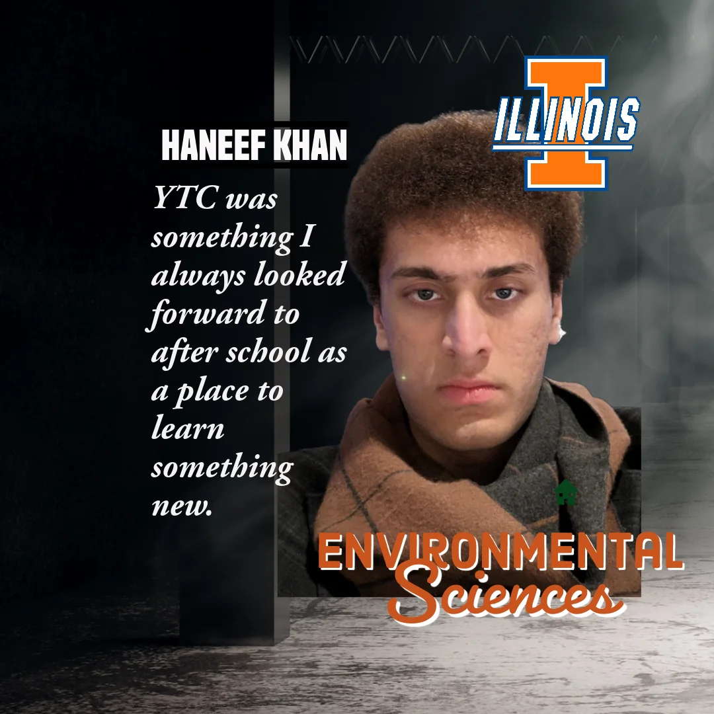

01 · THE HANDOFF
Learn it. Teach it forward.
A university mentor teaches an ETHS student. That student becomes the next teacher.
Skills move. Confidence moves. Responsibility moves.


Learn. Teach. Lead. Repeat.
At ETHS, students learn engineering, teach what they know, serve their community, and discover that a skill learned after school can matter far beyond the clubroom.





Former YTC students carry the clubroom with them — the habit of learning something, taking responsibility for it, and helping the next person.
A three-part story
Baseline snapshot
01 · THE HANDOFF
A university mentor teaches an ETHS student. That student becomes the next teacher.
Skills move. Confidence moves. Responsibility moves.
02 · GEORGIA TECH → ETHS
Georgia Tech Student Makers teach robotics and help experienced ETHS students become clubroom mentors.

03 · EVANSTON → NAMIBIA
ETHS students teach locally, mentor remotely, and build relationships farther from home.
WHAT THE MODEL LOOKS LIKE

Technology is the medium: computers, fabrication, robotics, coding, troubleshooting.
Learning becomes responsibility when another person is waiting for you to explain what you know.

That is where technical confidence starts turning into leadership.
THE CLUB HAS GENERATIONS
“It's like the club has generations. Leaders change, but the idea stays.”
— Furqaan · ETHS

FROM EVANSTON OUTWARD
Community technology, younger-student teaching, Camp Kuumba, and developing school relationships turn the club outward.
University partners, virtual teaching, and relationships across YTC's wider network show students that their skills can travel.
SUPPORT YTC EVANSTON
The work has always stretched farther than the budget behind it.